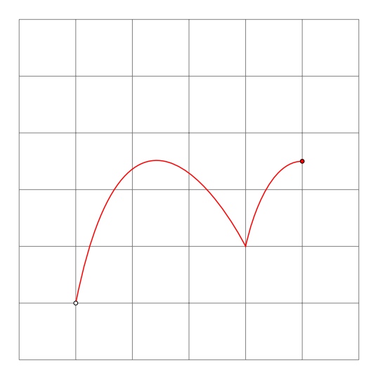
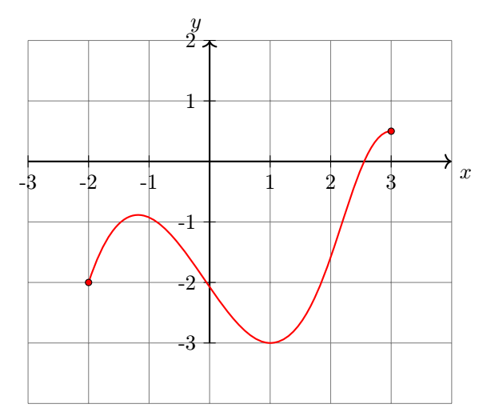
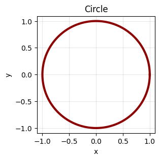
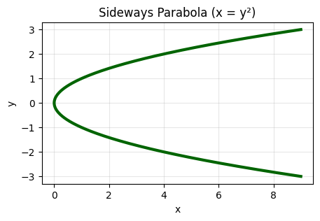
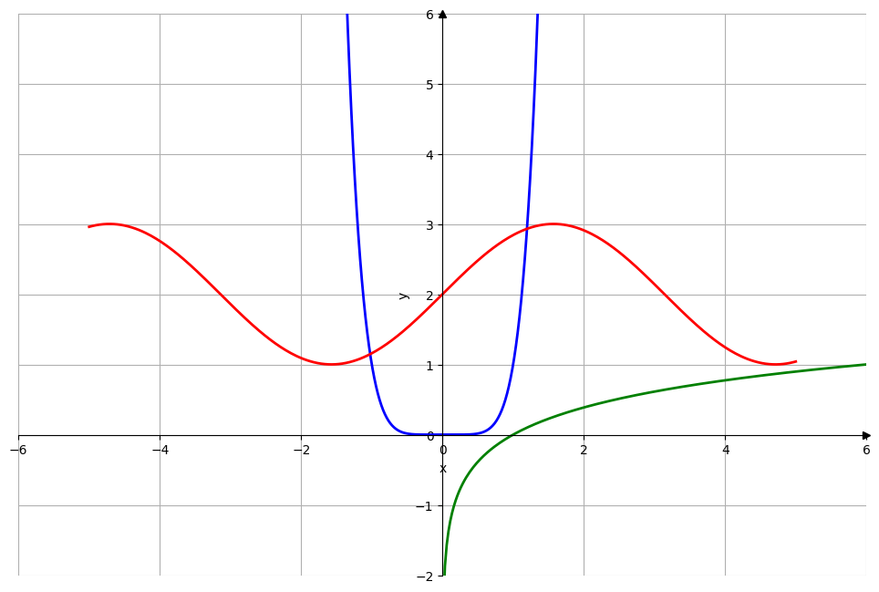
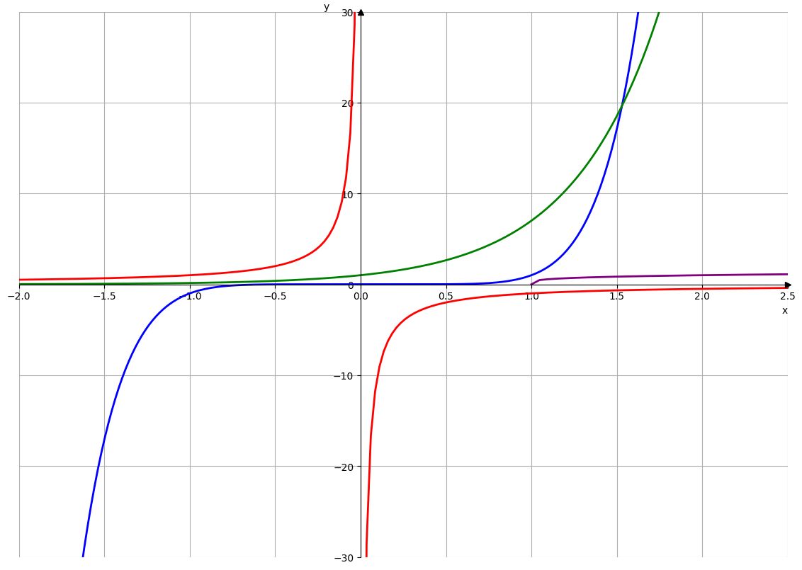
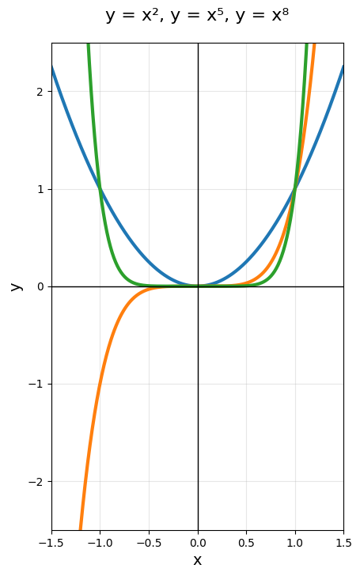
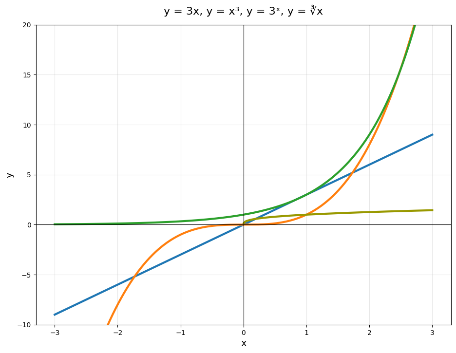

1. Determine whether the curve is the graph of a function of x.  🔗  🔗  🔗  🔗 🔗 🔗
2. Determine whether each of the following function is even, odd or neither even nor odd.🔗 \(\displaystyle f(x) =x\)🔗 🔗 \(\displaystyle f(x) = x^3+x\)🔗 🔗 \(\displaystyle f(x) =\cos x\)🔗 🔗 \(\displaystyle g(x) =1-x^2\)🔗 🔗 \(\displaystyle f(x) =\sin x\)🔗 🔗 \(\displaystyle h(x) = 2x+3\)🔗 🔗 \(\displaystyle f(x) = e^x\)🔗 🔗 \(\displaystyle f(x)=\ln |x| +1\)🔗 🔗 🔗 🔗
3. Find the domain of the following functions \begin{equation*} f(x) =\frac{x-2}{3-x} \end{equation*} 🔗 🔗 \begin{equation*} f(x) = \sqrt{4-x^2} \end{equation*} 🔗 🔗 \begin{equation*} f(x) =\frac{1}{\sqrt{1-x}} \end{equation*} 🔗 🔗 \begin{equation*} f(x) =\sqrt{4-x}+\frac{1}{\sqrt{x^2-1}} \end{equation*} 🔗 🔗 \begin{equation*} f(x) = \sqrt[3]{t-1} \end{equation*} 🔗 🔗 \begin{equation*} g(x) = \sqrt{5-2x} \end{equation*} 🔗 🔗 \begin{equation*} f(x) = \frac{x^4}{x^2+4x-5} \end{equation*} 🔗 🔗 🔗 🔗
5. Find the domain of \begin{equation*} f(x) = \frac{1}{\sqrt{4x-x^2}} \end{equation*} 🔗 Answer. \(4 \lt x \lt 0\text{.}\) Domain: (0,4)🔗 🔗 🔗
6. Find the domain and sketch the graph of the following functions: \begin{equation*} f(x) = \sqrt{2x-3} \end{equation*} 🔗 🔗 \begin{equation*} f(x) = \frac{1}{x+1} \end{equation*} 🔗 🔗 \begin{equation*} f(x) = \sqrt{-\frac{1}{x}} \end{equation*} 🔗 🔗 \begin{equation*} f(x) = \frac{1}{(x^2-1)} \end{equation*} 🔗 🔗 \begin{equation*} f(x) = \sqrt[3]{x} \end{equation*} 🔗 🔗 \begin{equation*} f(x) = \sqrt[4]{x} \end{equation*} 🔗 🔗 \begin{equation*} y=\frac{x^2-1}{x^2+1} \end{equation*} 🔗 Hint. \begin{equation*} x = \pm \sqrt{-\frac{(1+y)}{(y-1)}} \end{equation*} Define function, \begin{equation*} -\frac{(1+y)}{(y-1)} \geq 0 \end{equation*} \begin{equation*} or, \, \frac{(1+y)}{(y-1)} \leq 0 \end{equation*} \begin{equation*} \Rightarrow \,y \in [-1,1) \end{equation*} 🔗 🔗 🔗 🔗 🔗 🔗
7. Find the domain and sketch the graph of the following functions:🔗 \begin{equation*} f(x) = \sqrt{-x} \end{equation*} 🔗 🔗 \begin{equation*} h(x) = |2x-1| \end{equation*} 🔗 🔗 \begin{equation*} f(x) = \frac{x}{|x|} \end{equation*} 🔗 🔗 \begin{equation*} f(x) = \frac{x^2+x-6}{x+2} \end{equation*} 🔗 🔗 \begin{equation*} f(x) = \begin{cases} 1-x^2; & \text{ if } x\leq 2 \\ 3x-5 & \text{ if } x\gt 2 \end{cases} \end{equation*} 🔗 🔗 🔗 🔗
8. Match each equation with its graph: \(\displaystyle y=x^6\)🔗 🔗 \(\displaystyle y=\log_6 x\)🔗 🔗 \(\displaystyle y=2+\sin x\)🔗 🔗 🔗  🔗
9. Match each equation with its graph: \(\displaystyle y=x^7\)🔗 🔗 \(\displaystyle y=7^x\)🔗 🔗 \(\displaystyle y=-\frac{1}{x}\)🔗 🔗 \(\displaystyle y=\sqrt[4]{x-1}\)🔗 🔗 🔗  🔗
10. Graph each function: \(\displaystyle y=-\frac{1}{x}\)🔗 🔗 \(\displaystyle y=\tan 2x\)🔗 🔗 \(\displaystyle y=\cos \frac{x}{2}\)🔗 🔗 \(\displaystyle y=\sqrt[3]{x+2}\)🔗 🔗 \(\displaystyle y=2-\cos x\)🔗 🔗 \(\displaystyle y=-2\sin \pi x\)🔗 🔗 \(\displaystyle y=\frac{2}{x-3}\)🔗 🔗 \(\displaystyle y=2+\frac{1}{x+1}\)🔗 🔗 \(\displaystyle y=|\sin x|\)🔗 🔗 \(\displaystyle y=(x-1)^3+1\)🔗 🔗 \(\displaystyle y=2-\sqrt{x+2}\)🔗 🔗 🔗 🔗
11. Part A: Multiple Choice (2 points each)🔗 What is the domain of \(f(x) = \sqrt{4 - x}\text{?}\)🔗 \(\displaystyle x \geq -4\)🔗 🔗 \(\displaystyle x \leq 4\)🔗 🔗 \(\displaystyle x \geq 4\)🔗 🔗 All real numbers🔗 🔗 🔗 🔗 The range of \(g(x) = 3x^2 - 12\) is:🔗 Answer. 🔗 🔗 🔗 Find the domain of \(h(x) = \frac{5}{x+7}.\)🔗 🔗 For \(f(x) = \sqrt[3]{x-5}\text{,}\) the domain and range are:🔗 🔗 The function \(k(x) = \frac{1}{(x-2)(x+4)}\) has domain:🔗 🔗 What is the range of \(y = -2(x+3)^2 + 5\text{?}\)🔗 🔗 The domain of \(f(x) = \ln(7 - 4x)\) is:🔗 🔗 For the piecewise function \(f(x) =\begin{cases} x+1 & x \lt -\frac{2}{4} & -2 \leq x \lt \frac{3}{x^2} - 5 & x \geq 3 \end{cases}\) the range is:🔗 🔗 🔗 🔗 Part B: Free Response (show work, 5 points each)🔗 Find the domain and range of \(f(x) = \sqrt{9 - x^2}\text{.}\) Write in interval notation.🔗 Answer. domain = [-3, 3]🔗 range = [0, 3]🔗 🔗 🔗 Find the domain of \(g(x) = \frac{\sqrt{x+5}}{x^2 - 16}\text{.}\) Write in interval notation.🔗 Answer. Domain: \([-5, -4) \cup (-4, 4) \cup (4, \infty)\)🔗 🔗 🔗 Find the domain and range of \(h(x) = 2^{x-3} + 1\)🔗 🔗 For the function \(y = -3\sqrt{4-x} + 2\text{,}\) state the domain and range in interval notation.🔗 🔗 🔗 🔗 🔗
12. Match each equation with its graph. \(\displaystyle y=x^2\)🔗 🔗 \(\displaystyle y=x^5\)🔗 🔗 \(\displaystyle y=x^8\)🔗 🔗 🔗  🔗
13. Match each equation with its graph. \(\displaystyle y=3x\)🔗 🔗 \(\displaystyle y=x^3\)🔗 🔗 \(\displaystyle y=3^x\)🔗 🔗 \(\displaystyle y=\sqrt[3]{x}\)🔗 🔗 🔗  🔗
14. Find the range of: \begin{equation*} y = \frac{x^2+x+1}{x^2-x+1} \end{equation*} 🔗 🔗 \begin{equation*} y = \frac{x^2+x+2}{x^2+x+1} \end{equation*} 🔗 🔗 \begin{equation*} y = \frac{x^2-5x+6}{x^2-3x+2} \end{equation*} 🔗 🔗 🔗 Solution. Hint. change the equation in quadratic in \(x\text{.}\) Now quadratic equations in \(x\) are defined for \(D \geq 0.\)🔗 Answer. \(y\in (-\infty, \frac{1}{3}]\cup [3,\infty)\)🔗 🔗 🔗 🔗 \(\displaystyle 1\lt y \leq \frac{7}{3}\)🔗 🔗 \(\displaystyle y\in \mathbb R \setminus \{1,2\}\)🔗 🔗 🔗 🔗 🔗
16. Find the range of the following functions: \begin{equation*} f(x) = \frac{1}{x^2-2x-8} \end{equation*} 🔗 🔗 \begin{equation*} f(x) = \frac{3}{x^3-16x} \end{equation*} 🔗 🔗 \begin{equation*} f(x) = \sqrt{2x^2-5x-7} \end{equation*} 🔗 🔗 \begin{equation*} f(x) = \sqrt{8+2x-3x^2} \end{equation*} 🔗 🔗 🔗 🔗
17. Find the functions \(f\circ g, \, g\circ f, \, f\circ f, \, g\circ g\) and their domains. \begin{equation*} f(x) = x^2, \, g(x) = 1-\sqrt{x} \end{equation*} 🔗 🔗
18. Find the \(f\circ g\circ h\) and their domains. \begin{equation*} f(x) = x-2, \, g(x) = \sqrt{x}, \, h(x) = x-1 \end{equation*} 🔗 🔗
19. Plot the function and its inverse: \begin{equation*} f(x) = \frac{x^2+5x+6}{x+2} \end{equation*} 🔗 🔗
20. Draw graph and state the domain and range of \begin{equation*} y=\sqrt{9-x^2} \end{equation*} 🔗 🔗 \begin{equation*} y=\sqrt{x-1} \end{equation*} 🔗 🔗 \begin{equation*} y=|2x| \end{equation*} 🔗 🔗 \begin{equation*} y=\frac{1}{x-4} \end{equation*} 🔗 🔗 \begin{equation*} y=|2x|-1 \end{equation*} 🔗 🔗 🔗 Answer. \begin{equation*} x\in [-3,3]; \, y \in [0,3] \end{equation*} 🔗 🔗 \begin{equation*} x\in [1,\infty); \, y \in [0,\infty) \end{equation*} 🔗 🔗 \begin{equation*} x\in (-\infty,\infty); \, y \in [0,\infty) \end{equation*} 🔗 🔗 \begin{equation*} x\in \mathbb R \setminus \{4\}; \, y \in \mathbb R \setminus \{0\} \end{equation*} 🔗 🔗 \begin{equation*} x\in \mathbb R; \, y \in [-1, \infty) \end{equation*} 🔗 🔗 🔗 🔗 🔗